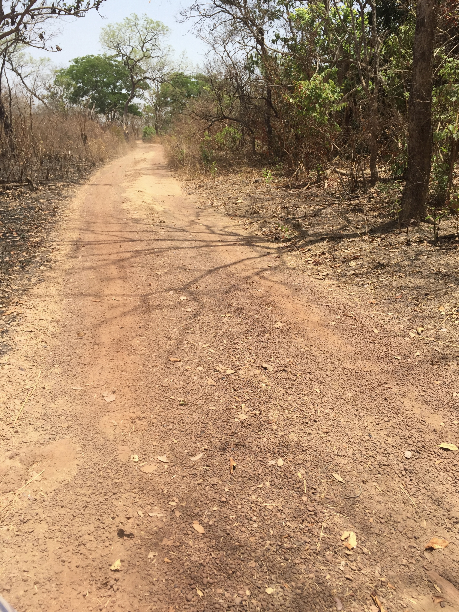

Hawa Balde
Hawa Balde was originally from the village of Sare Yela in the district of Paunca, in the region of Gabu in eastern Portuguese Guinea. She and her family were allied with the Portuguese during the war for independence. During the war, the independence fighters attacked her village because of their allegiance with the Portuguese. Because they were scared, they stayed in the forest for three years, only returning to the village to cook and eat dinner. They lived in fear of being attacked and having the village burned down. The war was particularly on the women of the community, because they were left at home, responsible for their childrens’ safety while their husbands were off fighting.
As a result of the violence of the war, Hawa went to Senegal with her daughters and husband. At first they went to Sare Demba Bouya before heading to the city of Kolda. After moving several times, they finally settled in the town of Mampatim.
After the war, the PAIGC targeted former Portuguese soldiers, including Hawa’s husband. Soldiers came to the village where they were living searching for her husband. She lied to them, and then they left for northern Senegal until things calmed down.
Generally though, things were peaceful between Senegal and Guinea-Bissau. She began to return regularly to Guinea-Bissau after the end of the war, and it was not difficult to cross the border. She was able to get papers as a Senegalese citizen because of her family in Sare Demba Bouya.
Interview
We are from Guinea-Bissau. We were with the Portuguese. At that time, a group of black people entered the forest as rebels of the PAIGC. At first, they said it was non-violent but they would come and attack the village and we would have to run away. For three years we slept in the woods. We just come back once a day to the village for dinner and return with all our kids after they had breastfed until they would stop crying [so they wouldn’t be heard by the PAIGC]. If they [the PAIGC] came, they would loot our homes; food, clothing, all of our things. Only you would run. Sometimes you would leave only with one skirt [the one you were wearing] and we would not have time to take our valuables with us; some would even leave their kids behind and run to escape. That was our life for the eleven years of the war: only hiding. White people [Portuguese] would see us and try to help us, but the PAIGC hiding in the forest would place mines everywhere to kill people. People would run away, or if they had a bicycle they would ride that. If they [the PAIGC] found food in your hut you would not eat [because they would take it], if they found clothes or kola nuts they would take that and anything else you had. That is my story.
Did you any of your relatives fight with the Portuguese and run from Guinea-Bissau to Senegal because of the PAIGC [government after independence]?
Those who were with the Portuguese, after the war ended some of them moved to Senegal and some of them were killed! My husband was a Portuguese soldier.
How did the PAIGC know who was working with the Portuguese?
We were all living in the same country. They were Portuguese people who protected and knew us and the PAIGC did not protect us and knew who the Portuguese had protected. So we came to Kolda [in Senegal] but they came and sent us back; many of our husbands were killed there, those who were lucky stayed here [and were not sent back to Guinea-Bissau].
Was the time of the war more difficult for men or for women?
It was more difficult for women because we had to take care of our children! If they [the PAIGC] came, your husband would run and leave us with our children and our things. You had to run with all your kids and whatever you could carry. If we were in a normal village, we could have time to take our stuff and move across the border, but we were living in hideouts and they always surprised us and shot at us!
Did you come here with your husband? Did you come straight to Mampatim? Where did you go? Is it near here?
Yes, we came together but not straight to Mampatim. We went first to Sare Dembadina, also known as Jimba Sara, near Sare Alet, and went to Kolda after that. In Sare Demba[dina] we stayed with one of my full siblings but in Kolda we lived in people’s homes until the PAIGC started to come to bring people back home to execute them.
How did they [the PAIGC] do that in Senegal?
They came here and took people. If you anyone in Kolda they can tell you until you understand! They came and ask the Senegalese government to give them their people because they want to bring them back because the country is peaceful now.
Did they try to bring you back?
They did. There was once time when they came to Santakoye from Saare Wassa. They woke me up and ask me where my husband was; at this time my husband had gone to another village and I told them I did not know. I also told them that my husband was the son of the chief of the village. They left. I refused to collaborate; they climbed in a big tree and looked around and I went and call the chief of the village who came and confirmed that I was his daughter-in-law and told us to go into his room; me and my children and to wait for my husband to come. When my husband came that night the chief explained him and we left here and went to Mbour [hundreds of miles away in central Senegal], after spending some time in Fatick and Thiadiaye.
Was it difficult to go to so many villages?
It was very difficult.
How did you make connections or friends in a new village?
You came and explained to the chief of the village, who welcomed you and who found a place for you to stay until you fill unsafe there and you moved to another village.
Did you move with your husband and all of your children?
Yes all of us! We could not stay in the same place for long because of security reasons. We went to Orsu, Madina Gounass on the road to Dakar where we stayed for a while, and Dar Salam as well. [These are all villages in southern Senegal.]
When did you come here? How long ago?
Almost fifty years now [in Senegal] because all my sons were born here. Only my daughters were born in Guinea-Bissau.
